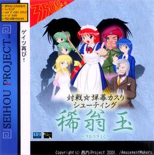

- Welcome to Touhou Wiki!
- Please register to edit. For assistance, check in with our Discord server or IRC channel.
Kioh Gyoku
Kioh Gyoku | |
|---|---|
|
 | |
| Developer | |
| Publisher |
Shunsatsu sare do? / |
| Released |
Trial: August, 2001 (Comiket 60) |
| Genre |
Game |
| Gameplay |
Single-player Story Mode, Human vs. Human Match (Shared screen, over TCP/IP), Human vs. Computer AI Match, Computer AI vs. Computer AI Match |
| Platforms | |
| Requirements |
|
| Official Site | |
- Note: This article is part of the Seihou Project by the Doujin circle "Shunsatsu sare do?".
Kioh Gyoku (稀翁玉, lit. "Rare Venerable Orb") is a vertical-scrolling danmaku shoot 'em up, and is the second official game in the Seihou Project by "Shunsatsu sare do?" (at time part of Amusement Makers). It was released specifically for the Windows operating system around December time in 2001. It is a unique game where two players indirectly battle one another by charging and releasing charge attacks and bombs upon the other player, similar in the style of Phantasmagoria of Dim.Dream.
Gameplay[edit]
Kioh Gyoku is a vertical danmaku shooting game with massive emphasis on grazing streaming bullets, where two characters engage in danmaku gameplay within individual and separate play areas (aka. split-screen). Upon meeting certain conditions, players are able to unleash a variety of character-specific attacks upon their opponents in an attempt to whittle down their remaining health points.
In Story Mode, the player will face five opponents, each more capable than the previous. Kioh Gyoku also features a Match Play Mode where the player may face off against AI opponents or compete against other players, as well as watch AI vs. AI matches.
Name and Concept[edit]
Kioh Gyoku may have been based on the same vein of Phantasmagoria of Dim.Dream. Also, some of the art in this game was done by ZUN, where he only drew Yuuka Kazami.
The name 稀翁玉 is named after the Japanese-translated name of a cactus: "copiapoa krainziana".
Story[edit]
There is no story included with the game, and thus the only dialogue shown is winning quotes.
Music[edit]
The soundtrack for the game was originally made with the Roland SC-88Pro MIDI module. However, before the game's release, ZUN arranged and re-recorded the tracks using a different module.
The music of this game includes 10 tracks composed by ZUN, available in two separate versions. The WAV version is based on ZUN's later arrangement of the soundtrack, and it's the first time ever ZUN used .wav recordings for the music. The MIDI version is based on the original compositions, and will only play correctly on a SC-88Pro. Recordings of the MIDI versions made using this module can be found here.
Each theme (apart from the title theme) is designed for one of the player characters specifically, due to the nature of the game.
Later on, ZUN remixed "Lovely Mound of Cherry Blossoms ~ Flower of Japan" (桜花之恋塚 ～ Flower of Japan) and "Enigmatic Doll ~ God Knows" (エニグマティクドール ～ God Knows), and included them in Dolls in Pseudo Paradise. "Enigmatic Doll ~ God Knows" was renamed to just エニグマティクドール.